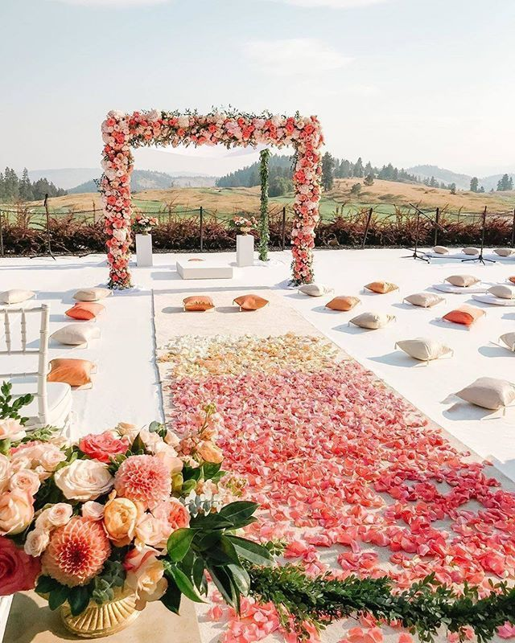

CORPARATE AND EVENTS
The world’s finest flowers delivered to your door with Bloom Waves. Creators of bespoke bouquets since 1876, we’ve been helping generations of customers celebrate life’s most important moments in style. Discover our range of luxury designs and award-winning British blooms.
Birthday Party
Our current collection is about real flowers, nature and some of its most beautiful fragrances, whilst always trying to keep to our quintessentially British roots with an inspiring designer twist at every turn.
Religious Celebration
Our collection reflects the changing seasons, and always highlights the very best of British and international blooms. Explore today and feel the excitement of the first fresh tulips or the first bunch of summertime dahlias.
Corparate Events
Fill up your senses with our fabulous Scented Collection. Bold, brave and always original, the bouquets in the collection feature a range of hyacinths, English roses, scented stocks and our premium lilies.
Wedding
Specially created to flourish for over a year, our Infinite Roses are the floral gift that lasts. Treat your amore to an irresistible Infinite Rose or browse our collection today for more information.
Culturals
Celebrate the most important day of your life with wedding flowers from London’s oldest and most prestigious florist. We offer delivery across the capital and the UK, brining exceptional floral designs to couples up and down the country

Housewarming Ceremany
When designing funeral tributes, such as casket sprays, wreaths, posies and other special flower arrangements, we tend to keep in mind and always design according to the notes passed on to us by the family members and friends of the deceased.